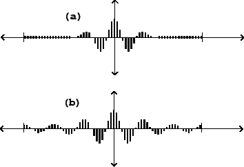
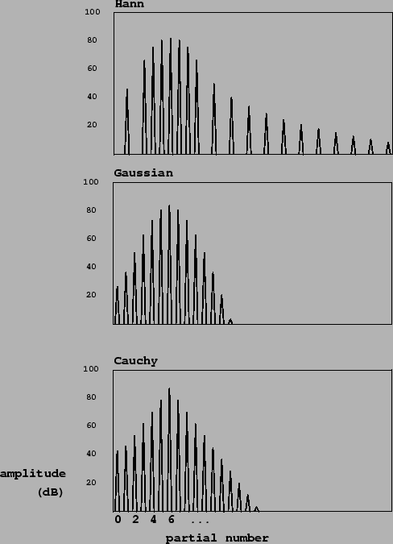

Before considering more complicated carrier signals to go with the modulators
we've seen so far, it is instructive to see what multiplication by a pure
sinusoid gives us as waveforms and spectra. Figure 6.5 shows
the result of multiplying two different pulse trains by a sinusoid at the
sixth partial:
|  |
In both situations we see, in effect, the sixth harmonic (the carrier signal) enveloped into a wave packet centered at the middle of the cycle, where the phase of the sinusoid is zero. Changing the frequency of the sinusoid changes the center frequency of the formant; changing the width of the packet (the proportion of the waveform during which the sinusoid is strong) changes the bandwidth. Note that the stretched Hann window function is zero at the beginning and end of the period, unlike the waveshaping packet.
Figure 6.6 shows how the shape of the formant depends on the method of production. The stretched wavetable form (part (a) of the figure) behaves well in the neighborhood of the peak, but somewhat oddly starting at four partials' distance from the peak, past which we see what are called sidelobes: spurious extra peaks at lower amplitude than the central peak. As the analysis of Section 2.4 predicts, the entire formant, sidelobes and all, stretches or contracts inversely as the pulse train is contracted or stretched in time.
|  |
The first, strongest sidelobes on either side are about 32 dB lower in amplitude than the main peak. Further sidelobes drop off slowly when expressed in decibels; the amplitudes decrease as the square of the distance from the center peak so that the sixth sidelobe to the right, three times further than the first one from the center frequency, is about twenty decibels further down. The effect of these sidelobes is often audible as a slight buzziness in the sound.
This formant shape may be made arbitrarily fat (i.e., high bandwidth), but there is a limit on how thin it can be made, since the duty cycle of the waveform cannot exceed 100%. At this maximum duty cycle the formant strength drops to zero at two harmonics' distance from the center peak. If a still lower bandwidth is needed, waveforms may be made to overlap as described in Section 2.6.
Parts (b) and (c) of the figure show formants generated using ring modulated waveshaping, with Gaussian and Cauchy transfer functions. The index of modulation is two in both cases (the same as for the Hann window of part a), and the bandwidth is comparable to that of the Hann example. In these examples there are no sidelobes, and moreover, the index of modulation may be dropped all the way to zero, giving a pure sinusoid; there is no lower limit on bandwidth. On the other hand, since the waveform does not reach zero at the ends of a cycle, this type of pulse train cannot be used to window an arbitrary wavetable, as the Hann pulse train could.
The Cauchy example is particularly handy for designing spectra, since the shape of the formant is a perfect isosceles triangle, when graphed in decibels. On the other hand, the Gaussian example gathers more energy toward the formant, and drops off faster at the tails, and so has a cleaner sound and offers better protection against foldover.